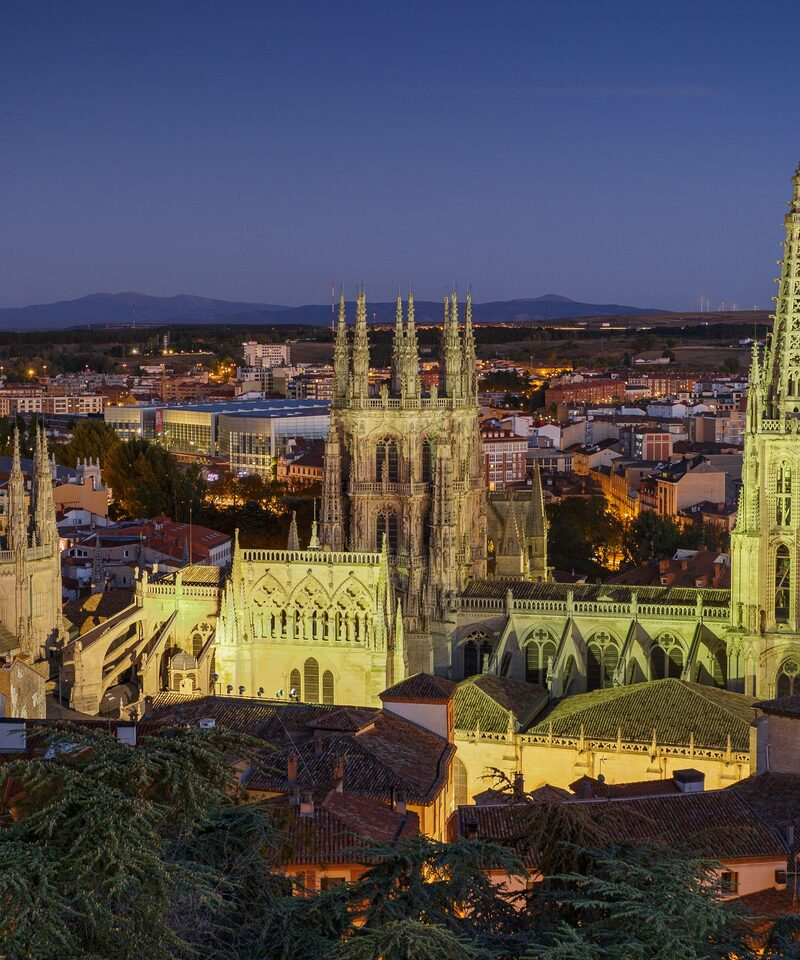
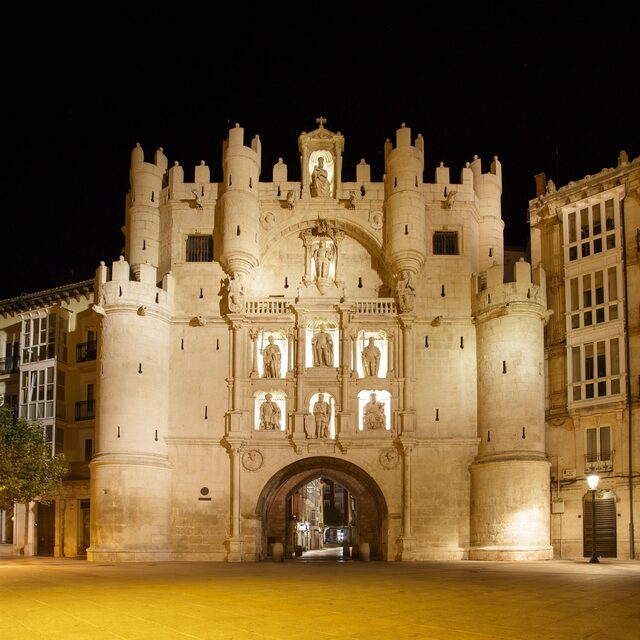
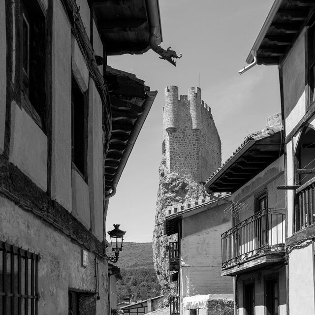
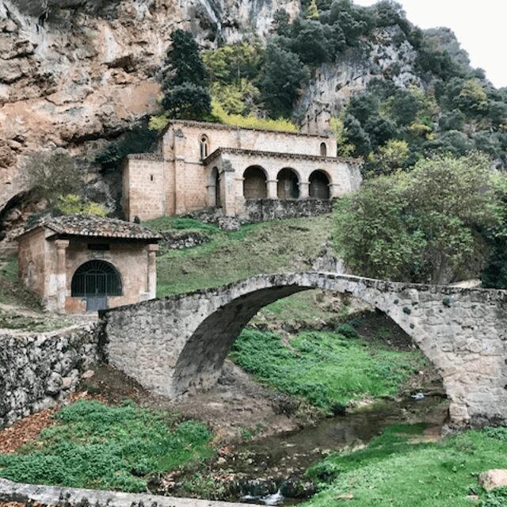
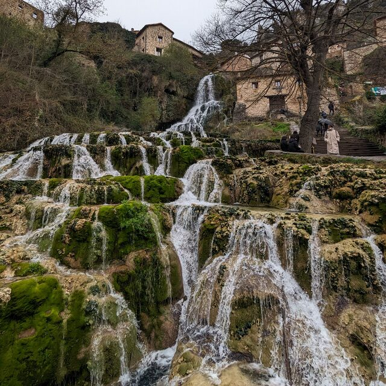

Viaja. Explora. Vive.
Organizamos escapadas de fin de semana pensadas al detalle: historia, naturaleza y pueblos con encanto, sin que tengas que preocuparte de nada.
Próximo viaje

Un recorrido inolvidable por la provincia de Burgos: historia, naturaleza y pueblos con encanto que te dejarán sin aliento.
Algunos rincones que visitamos




Quiénes somos
Cristina y Ariana diseñan cada ruta pensando en la gente que las acompaña: buen ritmo, buena compañía y sitios que de verdad merecen la pena.
ConócenosViaja. Explora. Vive. Recuerda.